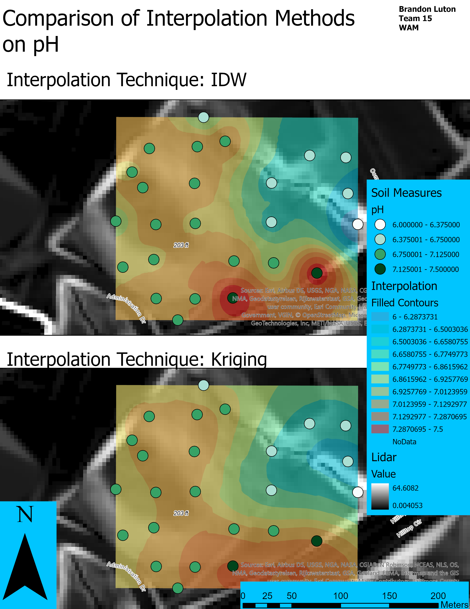
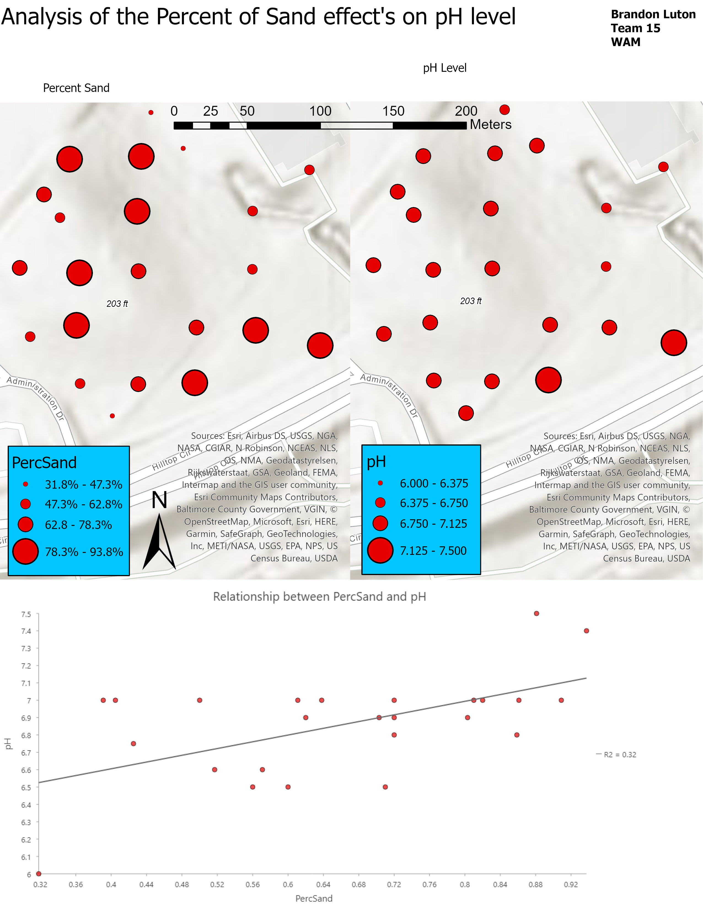
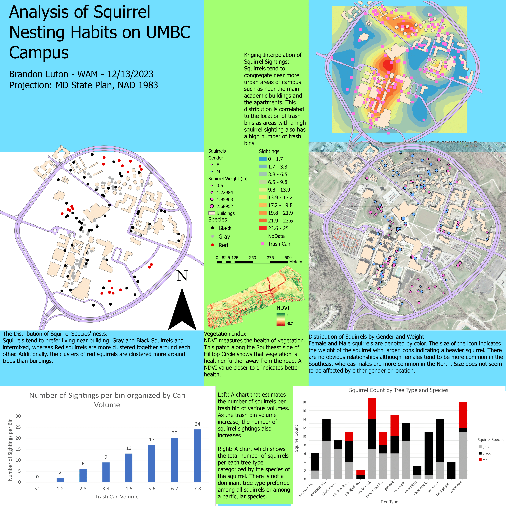

{% include sidebar.html %}
<!-- Sidebar -->
<div class="sidebar">
  <a href="#herbert">Analysis of Herbert Run Stream</a>
  <a href="#nvdi">NVDI Analysis</a>
  <a href="#interpolation">Comparison of Interpolation Methods on pH</a>
  <a href="#sand">Analysis of the Percent of Sand effect's on pH Level</a>
  <a href="#squirrel">Squirrel Nesting Habits</a>
</div>

<div class="content">
    <h1>Exploring the Environment: A Geo-Spatial Perspective Maps and Layouts</h1>
    
    
    
    
    

</div>